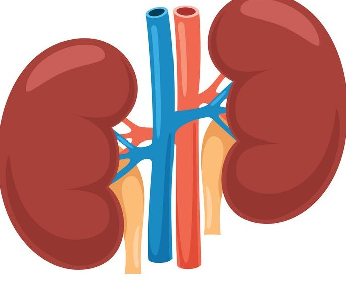

Pengertian CKD
Apasih itu penyakit CKD
Apa itu Chronic Kidney Disease
Chronic Kidney Disease (CKD) adalah kondisi dimana ginjal secara bertahap kehilangan kemampuan untuk melakukan fungsi - fungsi penting, seperti menyaring limbah dan cairan dari darah.
Ini disebababkan oleh berbagai hal seperti diabetes, tekanan darah tinggi, atau masalah genetik. CKD memerlukan perhatian medis dan pengelolaan yang cermat karena bisa berkembang menjadi masalah serius yang mempengaruhi kesehatan secara keseluruhan
- 
-